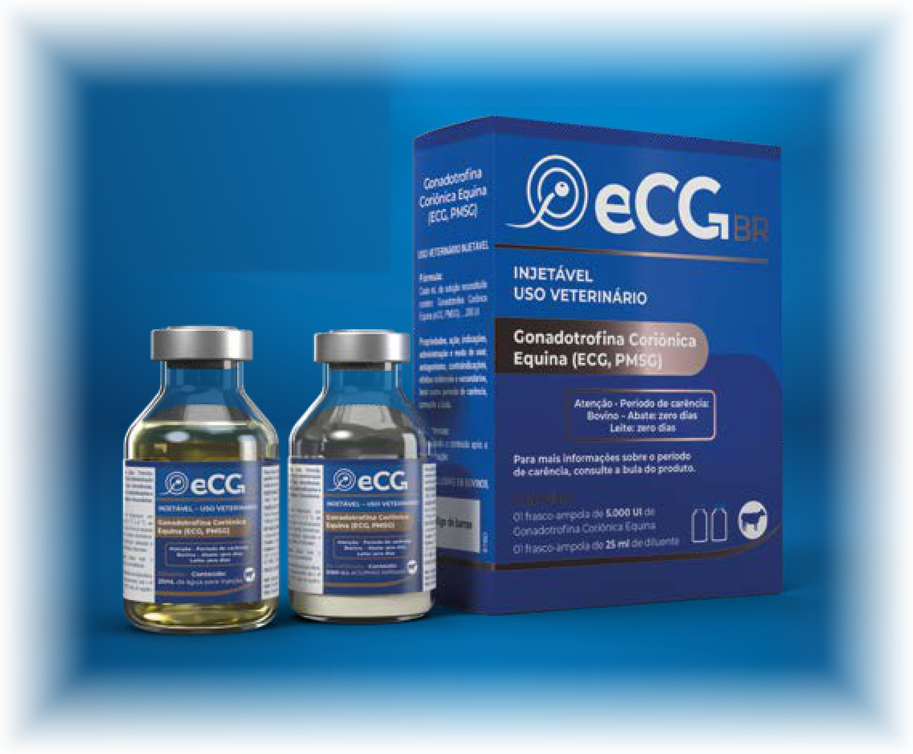
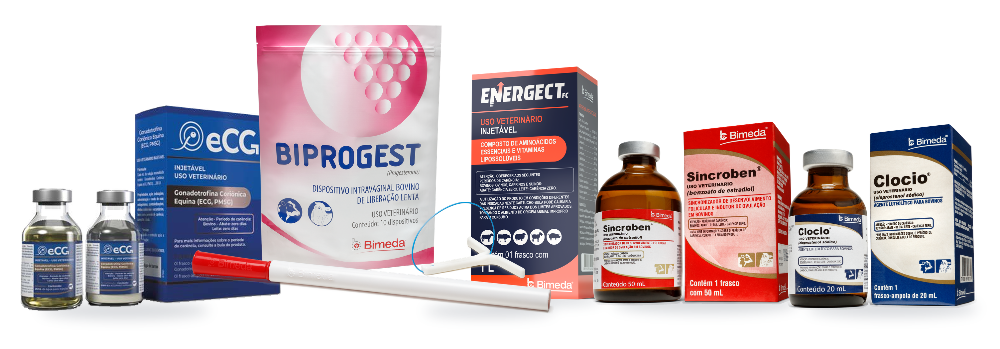
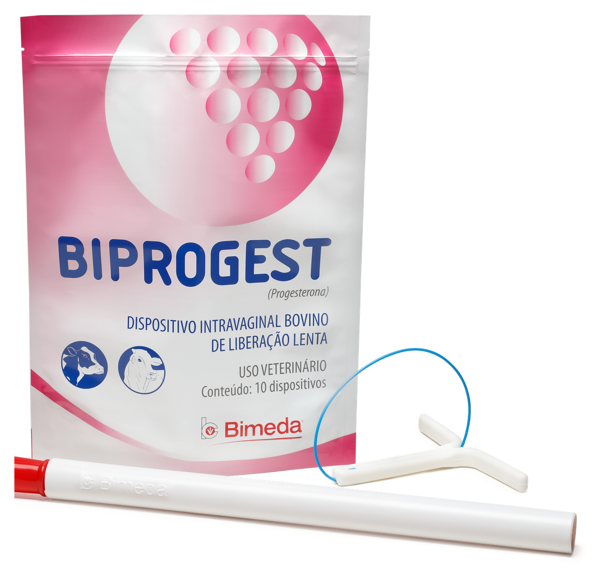
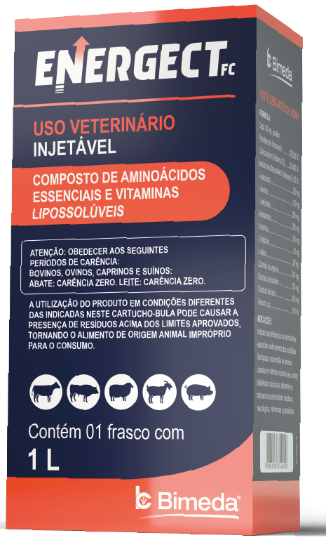
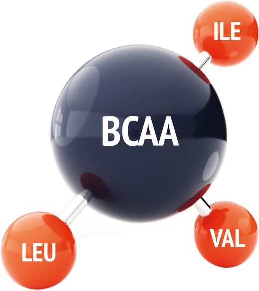
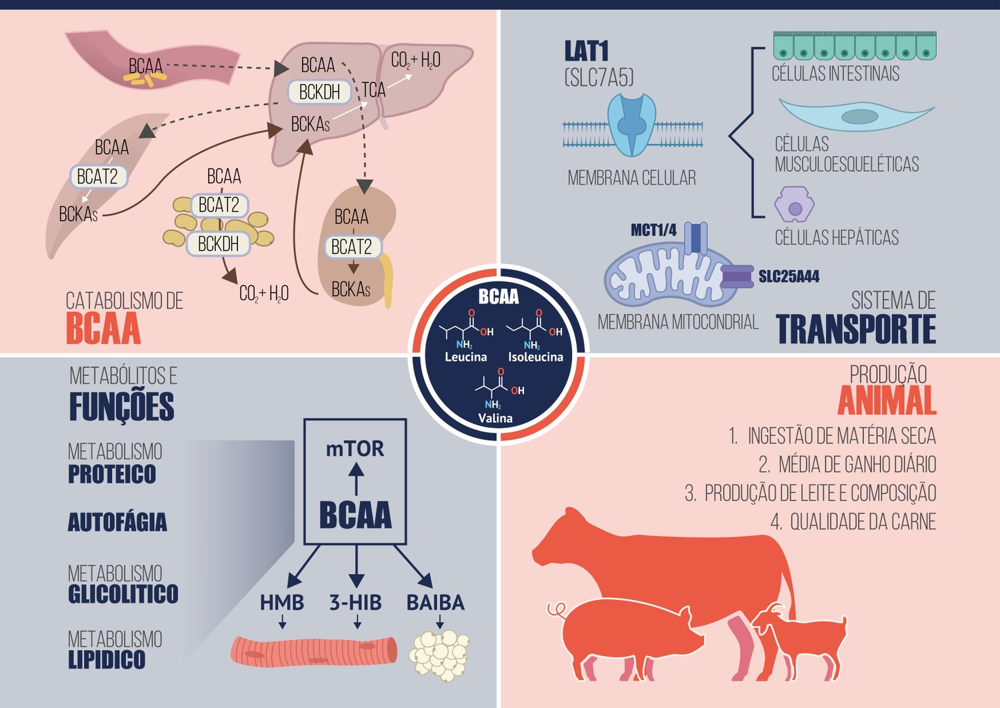
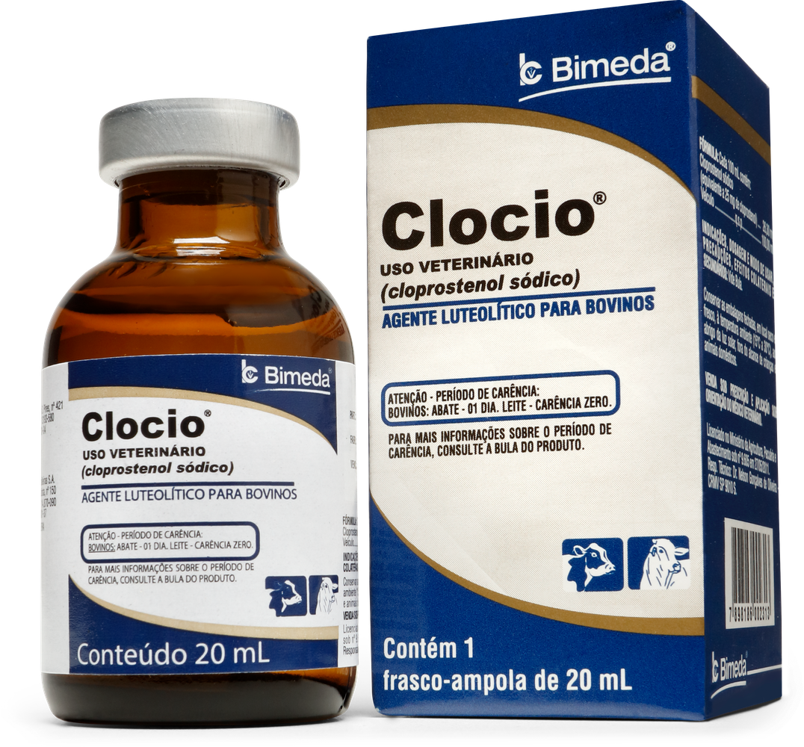
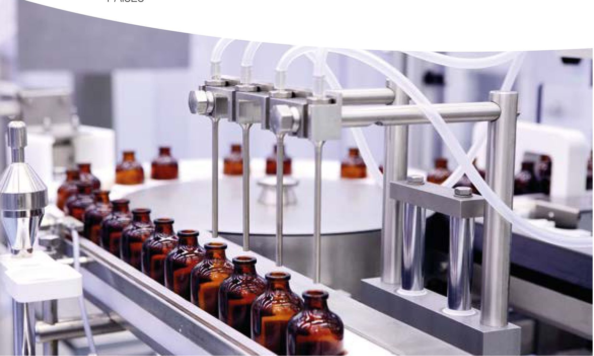

Reprodução começa com o produto certo.
Começa com a linha Bimeda Reprodução.
Cinco produtos e quatro protocolos de IATF desenvolvidos para entregar alta performance, qualidade superior e resultados consistentes, comprovados em campo.
Do laboratório ao curral
A combinação entre proximidade com a realidade do produtor e excelência científica que deu origem à linha Bimeda Reprodução.
- Pesquisa e tecnologia aplicadas à reprodução bovina
- Portfólio completo para montar o protocolo do seu rebanho
- Resultados consistentes comprovados em campo
Chegou o eCG BR para multiplicar a produtividade do seu rebanho com tecnologia e inovação.
Uma fonte de gonadotrofina coriônica equina, essencial para estimular o crescimento folicular e a ovulação em programas reprodutivos em fêmeas bovinas, o que promove aumento de taxa de prenhez. O eCG BR possui elevado controle de qualidade, pelos métodos farmacopeicos padrão (com uso de ratas) e na espécie alvo (fêmeas bovinas), garantindo a sua eficácia e resultados.

- Aumenta o crescimento folicular
- Eleva as taxas de ovulação
- Rígido controle de qualidade
1 frasco-ampola de 5.000 UI de gonadotrofina coriônica equina e 1 frasco-ampola de 25 mL de diluente. Carência: bovino, abate zero dias; leite, zero dias.
A linha Bimeda Reprodução
Um portfólio desenvolvido para oferecer alta performance, qualidade superior e resultados consistentes em cada etapa do programa reprodutivo.

Entre as biotecnologias reprodutivas disponíveis para rebanhos bovinos, a IATF (inseminação artificial em tempo fixo) é sem dúvida a mais conhecida e usada atualmente. Entre as principais vantagens de utilizá-la, podemos citar:
- Evolução genética do rebanho
- Antecipação das prenhezes
- Aumento da taxa de prenhes ao final da estação de monta
- Redução do intervalo entre partos
- Padronização do rebanho
- Concentração dos nascimentos e consequentemente do desmame
- Aumento do peso ao desmame
- Redução da idade para abate
Biprogest
Progesterona (P4) · Dispositivo intravaginal
Dispositivo intravaginal a base de progesterona de liberação controlada de alta concentração, para controle do ciclo estral de fêmeas bovinas. Com design anatômico, que proporciona maior conforto para o animal e baixa taxas de perda do dispositivo.
- Alta concentração de progesterona (1,25 g)
- Design anatômico
- Baixo índice de perda
Embalagem com 10 dispositivos

- 1º uso
- 2º uso
- 3º uso
Energect FC
Aminoácidos essenciais (BCAA) e vitaminas lipossolúveis · Injetável
Composto anabólico não esteroidal, a base de vitaminas lipossolúveis e aminoácidos essências, incluindo o BCAA (tradução: aminoácidos de cadeia ramificada), que quando presentes são responsáveis por grande parte do desenvolvimento muscular, cerca de 35%.
Presença dos BCAA é importante para ativação de uma das vias mais importantes de síntese proteica e crescimento muscular, a via mTOR.
- BCAA: cerca de 35% do desenvolvimento muscular
- Ativação da via mTOR
- Vitaminas lipossolúveis
Frasco com 1 litro



Sincroben
Benzoato de estradiol · Injetável
Benzoato de estradiol indicado para sincronização da onda folicular associado com Biprogest e na indução da ovulação em fêmeas bovinas em programas de IATF.
- Indução de ovulação
- Sincroniza a emergência folicular
Frasco com 50 mL
O que ele entrega no protocolo
Aplicado junto com a inserção do Biprogest, sincroniza a emergência folicular e alinha o rebanho no mesmo ponto do ciclo.
Induz a ovulação em janela previsível, o que permite inseminar em tempo fixo, sem observação de cio.
Clocio
Cloprostenol sódico · Injetável
Formulação a base de cloprostenol sódico, análogo sintético de PGF2α, potente agente luteolitico para promover a luteólise do corpo lúteo em fêmeas bovinas, sejam de corte ou leite. Além de promover a luteólise, o cloprostenol sódico auxilia no processo de involução uterina pós-parto e melhora dos índices reprodutivos como período de serviço e taxa de concepção (Lopes DT, 2007, dissertação de mestrado).
- Cloprostenol sódico
- Facilita a involução uterina
- Maior meia vida plasmática em relação a outros análogos (Pursley et al, 2012)
Frasco-ampola de 20 mL
O que ele entrega no protocolo
Regressão do corpo lúteo, abrindo caminho para a nova onda folicular.
Ajuda o útero a voltar às condições de receber uma nova gestação.
Período de serviço mais curto e melhor taxa de concepção.

Protocolos eficientes, desenvolvido para entregar mais desempenho e resultados consistentes no seu rebanho.
Protocolo de vacas de leite
-
Dia 0
Sincroben (2 mL) + GnRH
Inserção do Biprogest - Dia 7 Clocio (2 mL)
-
Dia 8
Clocio (2 mL)
Retirada do Biprogest - Dia 10 IATF + GnRH
Produtos: Biprogest · Sincroben · Clocio
Vacas de corte (anestro)
-
Dia 0
Sincroben (2 mL)
Inserção do Biprogest -
Dia 8
Clocio (2 mL) + CE + eCG BR (1,5 mL)
Retirada do Biprogest - Dia 10 IATF
Produtos: Biprogest · Sincroben · Clocio · eCG BR
Protocolo de novilhas (ciclando)
-
Dia 0
Sincroben (2 mL) + Clocio (2 mL)
Inserção do Biprogest -
Dia 8
CE + eCG BR (1 mL)
Retirada do Biprogest - Dia 10 IATF
Produtos: Biprogest · Sincroben · Clocio · eCG BR
Protocolo para indução de ciclicidade
- Dia 0 Inserção do Biprogest
- Dia 12 Sincroben (2 mL)
- Dia 0 Início das sincronizações
Produtos: Biprogest · Sincroben
CE: cipionato de estradiol. Consulte sempre a bula do produto e a orientação do médico-veterinário responsável.
Receba as informações completas dos protocolos e o apoio técnico para o seu rebanho.
Excelência global em saúde animal
Há mais de 65 anos, a Bimeda caminha ao lado de veterinários e produtores, contribuindo para a saúde e o bem-estar animal com soluções seguras, confiáveis e apoiadas pela ciência.
A Bimeda investe continuamente em pesquisa, inovação e tecnologia para apoiar decisões que fazem a diferença no campo e gerar resultados sustentáveis para a pecuária.
É dessa combinação entre proximidade com a realidade do produtor e excelência científica que nasce a linha Bimeda Reprodução: um portfólio desenvolvido para oferecer alta performance, qualidade superior e resultados consistentes, comprovados em campo.
Porque inovar, para a Bimeda, significa estar cada vez mais próxima de quem cuida dos animais e trabalha diariamente para alcançar os melhores resultados.

- +65anos de história
- +80países com produtos Bimeda
- 8centros de P&D
- 7laboratórios regulatórios
- 9instalações de fabricação
- 6países de produção
Leve a linha Bimeda Reprodução para o curral
Baixe o folheto técnico com as fichas dos cinco produtos, os quatro protocolos de IATF e os resultados dos estudos. Um PDF para consultar quando precisar, direto do celular.
- Fichas técnicas dos 5 produtos
- 4 protocolos completos, dia a dia
- Gráficos e referências dos estudos
Recebemos o seu contato.
O download do folheto começou. Se não iniciar automaticamente, clique aqui para baixar.
Referências
- SBTE, 2026. Taxa de prenhes aos 30 dias em fêmeas nelore submetidas a protocolo de IATF com diferentes dispositivos de progesterona.
- PURSLEY, J. R. et al., 2012.
- LOPES, D. T., 2007. Dissertação de mestrado.
- XU et al., 2025 (adaptado). Vias metabólicas, transporte e efeito do BCAA.
Produtos de uso veterinário. Consulte sempre a bula do produto e a orientação do médico-veterinário responsável. Respeite o período de carência indicado em bula.